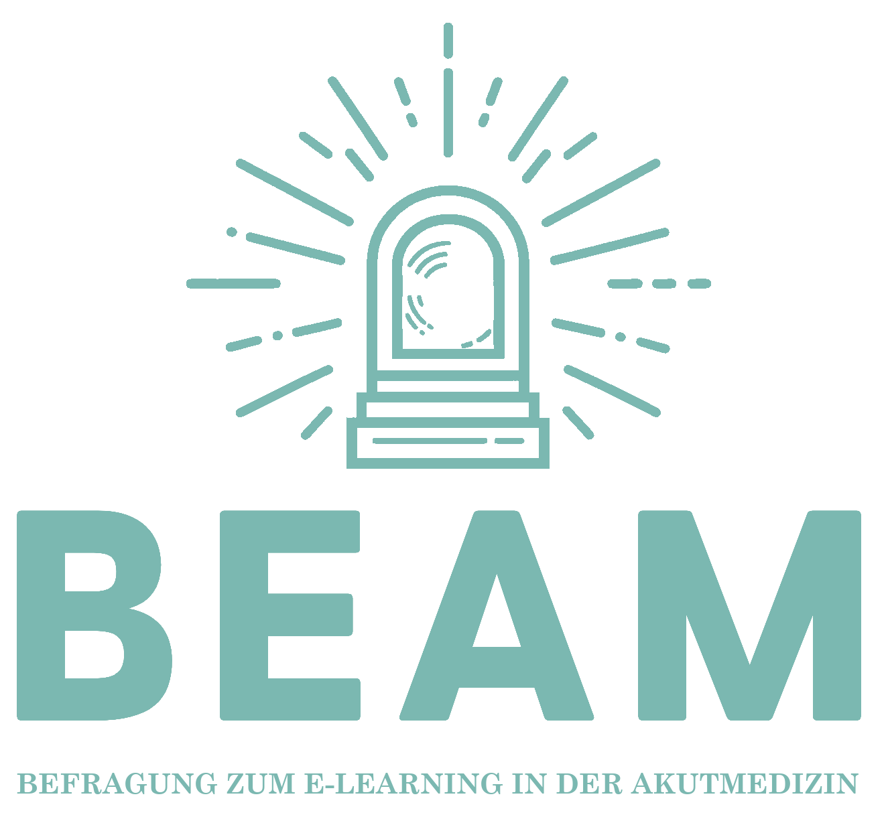

Die Umfrage ist beendet!
Wir befinden uns aktuell in der Auswertung der Umfrage und werden informieren, sobald Umfrage und Rohdatensatz veröffentlicht sind.
Die Corona-Pandemie hat gezeigt, dass Fortbildung nicht nur aus Büchern, Zeitschriften und Präsenzveranstaltungen bestehen muss. Auch zunehmend knappe Fortbildungsbudgets zwingen uns zum Umdenken und zur Anpassung unserer Kurslandschaft.
E-Learning ist auf dieser Basis salonfähig geworden und eröffnet neue Welten für die medizinische Aus- und Weiterbildung.
Wir sind der Meinung, dass dieses Potential noch deutlich besser genutzt werden kann und sollte. Für die sinnvolle Entwicklung zukünftiger E-Learning Inhalte ist es allerdings zuerst notwendig, das aktuelle Nutzungsverhalten, die potenzielle Nutzungsbereitschaft sowie die Interessen und Gedanken der Ärztinnen und Ärzte hierzu zu verstehen.
Mit dieser Umfrage möchten wir genau dafür eine Datenbasis schaffen. Ziel der Umfrage ist es, den vielen begeisterten und engagierten Lehrenden in der medizinischen Fort- und Weiterbildung die zukünftige Entwicklung von E-Learning-Inhalten zu erleichtern und diese besser auf die Wünsche und Erwartungen der NutzerInnen abzustimmen.
Die Daten dieser Umfrage wurden bereits von Anfang an vollständig anonym erhoben.
Dies ermöglicht uns, im Sinne einer transparenten Wissenschaft, das Versprechen abzugeben, mit der Veröffentlichung der Auswertung der Umfrage, allen Interessierten den vollständigen Rohdatensatz frei zur Verfügung zu stellen.
Vielen Dank für eure zahlreiche Teilnahme!
Das Team der BEAM
- Philipp Chadid (Notaufnahme, Klinikum Kempten)
- Dominik Knott (Notaufnahme, Bundeswehrkrankenhaus Berlin)
- Newroz Narcin (Notaufnahme, Klinikum Augsburg)
- Maximilian Quellmalz
Kontakt: info@beam-survey.de